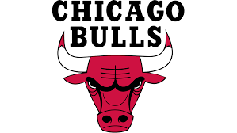

Los Chicago Bulls (en idioma español: Toros de Chicago) son un equipo profesional de baloncesto de los Estados Unidos con sede en Chicago, Illinois. Compiten en la División Central de la Conferencia Este de la National Basketball Association (NBA) y disputan sus partidos como locales en el United Center. Fundado en 1966. Es el tercer equipo profesional con sede en esta ciudad tras Chicago Packers/Zephyrs y Chicago Stags, equipo que participó en los años 1940 en la BAA, antigua denominación de la liga profesional norteamericana de baloncesto. Su jugador más emblemático ha sido Michael Jordan, considerado por muchos el mejor jugador de baloncesto de la historia.
Ya no quedaban excusas al comienzo de la temporada 1990-91. Con los refuerzos obtenidos, la aspiración debía ser el título de la NBA. Consiguieron un récord de la franquicia al alcanzar las 61 victorias en la fase regular, barriendo en las Finales de Conferencia a los Pistons y cediendo un único partido ante los Lakers de Magic Johnson en las Finales.11 Jordan ganó el MVP tanto en la temporada regular como en las finales, consiguiendo además su quinto título consecutivo de mejor anotador de la liga. Al año siguiente se repetiría la historia. Superaron el récord de victorias en la temporada regular, situándolo en 67. En la final se encontraron con Portland Trail Blazers, liderados por Clyde Drexler, a los que superaron en 6 partidos. De nuevo Jordan ganaría todos los títulos posibles, incluido el de mejor anotador.13 En la temporada 1992-93 los Bulls consiguieron algo que ningún equipo había logrado desde los legendarios Celtics de los 60, ganando el título por tercer año consecutivo.14 Los rivales fueron los Suns del MVP de la temporada, Charles Barkley. Jordan fue de nuevo el mejor jugador de las finales, consiguiendo el récord de mejor promedio de puntos por partido en finales de NBA con 41. También igualó a Wilt Chamberlain al ganar su séptimo título de mejor anotador consecutivo. Durante el verano, Jordan conmocionó al mundo del baloncesto y a la opinión pública en general al anunciar su retirada de las pistas, pocos meses después del asesinato de su padre.16 Los Bulls quedaron entonces liderados por Scottie Pippen, que se estableció entre los mejores jugadores de la liga tras ganar el MVP del All Star Game, y contó con la ayuda de Horace Grant y B.J. Armstrong, a los que había que añadir a Cartwright, Perdue, el base Pete Myers y el rookie croata Toni Kukoč. A pesar de una fantástica fase regular, con 55 victorias, fueron derrotados en la segunda ronda de los playoffs de la NBA 1994 por los New York Knicks.17
Los Bulls comenzaron la temporada 1994-95 diciendo adiós al que había sido su pabellón durante 27 años, el Chicago Stadium, trasladándose a su sede actual, el United Center. Ese año perdieron a Horace Grant y Scott Williams, que se convirtieron en agentes libres y a Bill Cartwright y John Paxson que se retiraron, pero ficharon a Ron Harper, que junto a Steve Kerr, adquirido el año anterior, y los pívots Luc Longley y Bill Wennington, ayudaron a reconstruir el equipo. Sin embargo, la mejor noticia para los Bulls llegó el 17 de marzo de 1995, cuando Michael Jordan decidió regresar de su retiro. Y lo hizo de la mejor manera posible, anotando 55 puntos ante New York Knicks en su quinto partido tras su vuelta, y llevando a su equipo a los playoffs, donde tras ganar a los Hornets en primera ronda, fueron incapaces de superar al a la postre campeón de la Conferencia Este, Orlando Magic, con jugadores como Horace Grant, Anfernee Hardaway y Shaquille O'Neal, cayendo por 4 a 2.
Al año siguiente perdieron a B.J. Armstrong en el draft de expansión, pero a cambio lograron un trueque de jugadores con San Antonio Spurs que enviaba a Will Perdue a Texas a cambio del cuatro veces mejor reboteador de la liga, el polémico Dennis Rodman, antiguo miembro de los míticos Bad Boys de los Pistons. Con un cinco inicial con Harper, Jordan, Pippen, Rodman y Longley y con quizás el mejor banquillo de la liga, con jugadores como Kerr, Toni Kukoc, Wennington, Buechler y Randy Brown, los Bulls consiguieron pasar de un balance de 47 victorias y 35 derrotas del año anterior al récord de 72-10.19 Jordan ganó su octavo título de mejor anotador, Rodman el quinto consecutivo como mejor reboteador, y Kerr acabó segundo en porcentaje de tiros de 3. Jordan, además, se alzó con la Triple Corona al ganar el Most Valuable Player (NBA) de la liga regular, del All-Star Game y de las Finales. Krause fue elegido Ejecutivo del Año de la NBA, Jackson Entrenador del Año y Kukoc Mejor Sexto Hombre. Jordan y Pippen fueron elegidos en el mejor quinteto de la liga, y ambos junto a Rodman en el mejor quinteto defensivo, haciendo que los Bulls fueran el primer equipo de la historia en meter a tres jugadores en dicha categoría.20 Además, la plantilla de ese año batió varios récords más, incluidos el de mejor balance en partidos fuera de casa (33 victorias, 8 derrotas), el mejor arranque liguero (41-3), la más larga serie de partidos ganados consecutivamente (44, 7 de la anterior temporada) y el mejor comienzo en casa (37-0). Fueron también el segundo mejor equipo de la historia en casa (39-2), solo por detrás de los Celtics de 1986, que consiguieron un 40-1. En las Finales ganaron a los Seattle Supersonics de Gary Payton y Shawn Kemp por 4-2, consiguiendo su cuarto anillo de campeones.
El equipo de los Bulls de la temporada 1995-96 está considerado como uno de los 10 mejores de la historia de la NBA. En la temporada 1996-97, los Bulls a punto estuvieron de repetir una campaña con 70 victorias, quedándose a una tras perder sus dos últimos partidos de la fase regular, aunque repitieron su dominio en casa con un 39-2.24 Tras arrasar de nuevo en los playoffs, se plantaron en la final ante los Utah Jazz de John Stockton y Karl Malone, ganando su quinto título de la década.25 Jordan ganó su noveno título de máximo anotador, Rodman su sexto consecutivo en rebotes, mientras que el propio Jordan y Scottie Pippen, junto con Robert Parish, que jugó su última temporada en activo con los Bulls, fueron incluidos ese año, celebración del 50 aniversario de la NBA, entre los 50 mejores jugadores de la historia de la liga. Los Bulls consiguieron lo que se denominó "repeat the three-peat" ganando 62 partidos de la liga regular y logrando imponerse en las Finales de la NBA de 1998 a Utah Jazz por 4-2.28 Jordan se hizo de nuevo con todos los títulos posibles a nivel individual, incluida su décima corona de máximo anotador, mientras Rodman se hacía con su séptimo título de mejor reboteador.29
Presentación de los quintetos iniciales: Los Chicago Bulls fueron el primer equipo de la NBA en oscurecer el pabellón durante la presentación de los quintetos titulares, tradición que siguieron otros equipos de la liga. Durante la época del dominio de los Bulls, las presentaciones de los jugadores se hicieron famosas en el mundo entero. El locutor iba anunciando a los jugadores de los Bulls con la canción "Syrius" de The Alan Parsons Project, durante los seis años que consiguieron el anillo de campeones, y previamente había presentado al equipo rival con el tema de Pink Floyd "On the Run".46 Era entonces cuando todas las luces se apagaban y salía el quinteto titular de Chicago a la cancha, siendo el primero en hacerlo el alero, seguido del ala-pívot, el pívot, el base y finalmente el escolta, lo cual significó que el primero en salir en los 6 años que ganaron el campeonato fuera Scottie Pippen y el último Michael Jordan (los dos únicos jugadores que han participado de todos los títulos de los Bulls).
Zapatillas negras: Los Bulls tienen una tradición no oficial que consiste en llevar zapatillas negras en los playoffs, que data del año 1989, cuando recurrieron a este tipo de calzado por primera vez.48 Tras un largo paréntesis de 6 años sin ir a la fase final del campeonato, en la temporada 2004-05 retomaron la tradición.
Cintas en la cabeza: El equipo tiene también la norma interna de no permitir llevar cintas en el pelo. Esta regla se rompió con Ben Wallace en la temporada 2006-07, pero el entrenador Skiles ya advirtió que solamente se le permitiría llevarla durante esa temporada y la siguiente. Casi la tercera parte de los equipos de la liga tienen normas similares.
 Indice
Indice